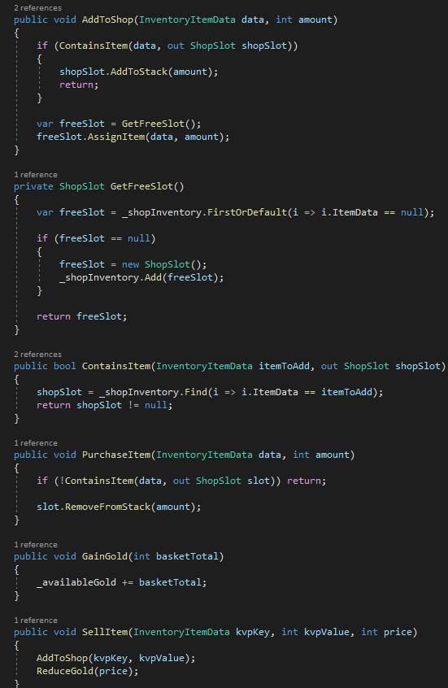
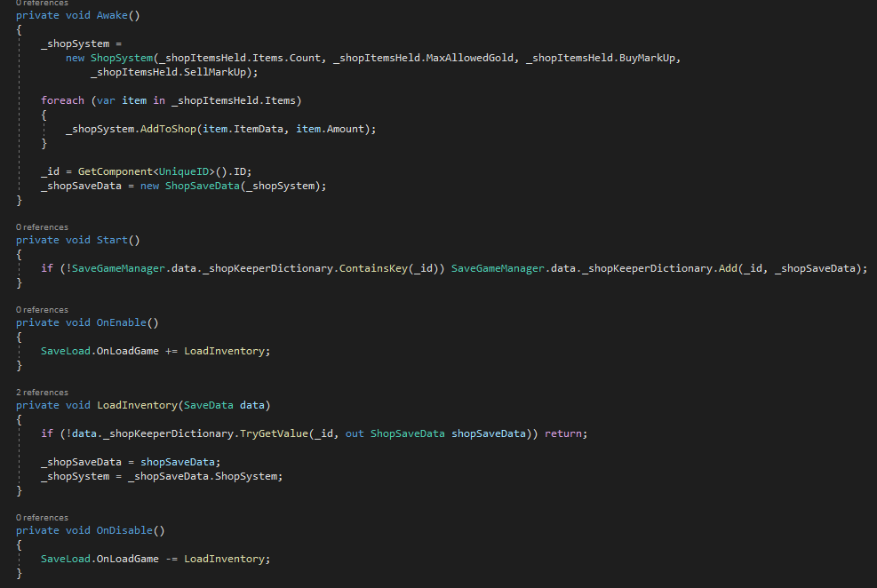
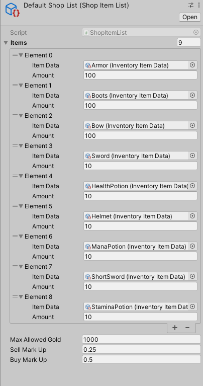
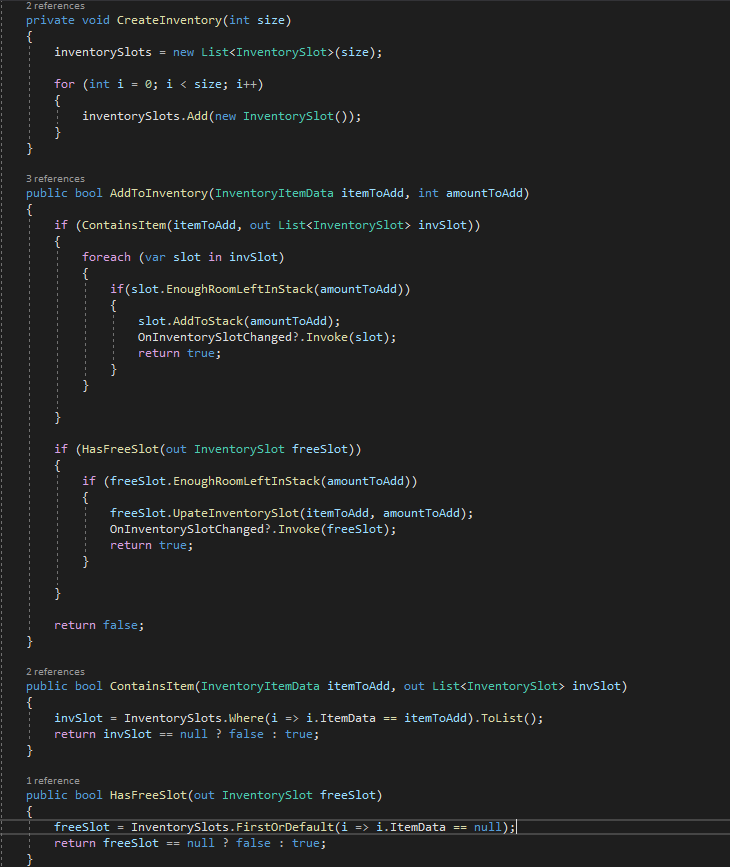

This project was created to gain an understanding of inventory and shop systems within video games, and how they inateract with each other.
Creating the Shop Slots
creating the slots for the shop involved creating a item database that stores and contains said items. The code checks if there are any avaiable
slots and if true it adds a set item into the shop.

The Shop System
The shop system was used to load the inventory of the player and shop and allowed them to interact with each other. It accounted for both the amount of money the shop had to give you back for selling items
and the amount of money you had to buy items. It controls what items go back into the shop and how many are left of said items.


The Inventory

The purpose of this project was to understand the backends and complexity of different inventory systems, and shop systems. Through learning in depth about scriptable objects and how they are implemented into both a inventory system and selling and buying system, this demostration was created. I learned a lot about creating systems that save themselves and how correct interactions are to be with players, game objects, and other UI. In future progress on this project I want to learn how to implement it with unities new Input System.
Inspirations:
@Unity
@CodeMonkey
@Dan Pos
@Brackeys
Map Credit to:
Unity Starter Assets
Other Asset Credit:
Free Pixel Gear
Free Potion Icons